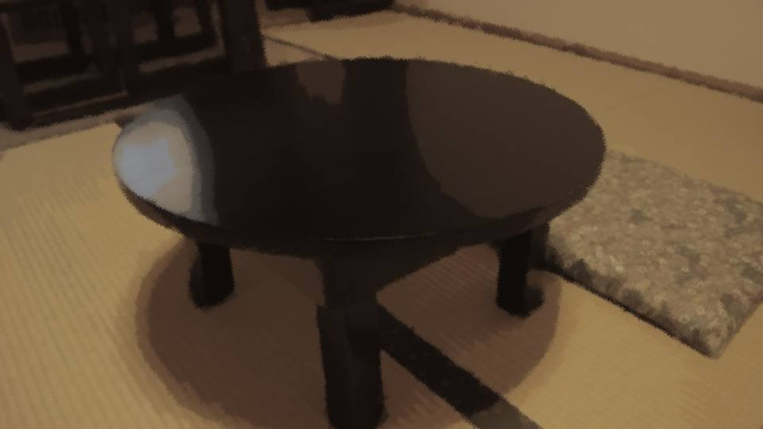
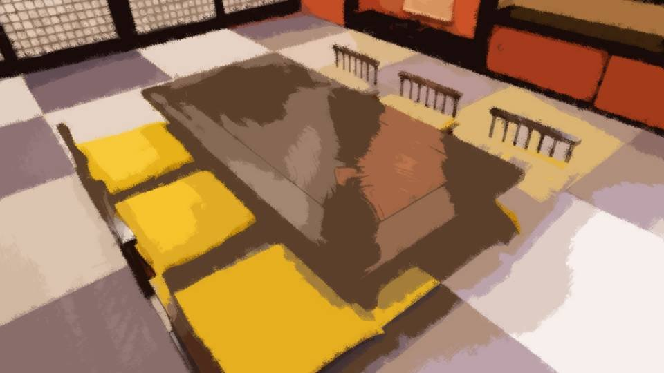
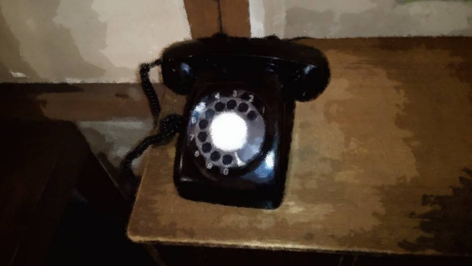

Script 000021CF
 video: 雪.wmv
video: 雪.wmvIn this weather, the automobile could not be taken out.
The snow kept piling up, higher and higher.
I had to get back down to the foot of the mountain quickly.
My feet were losing the last of their feeling, and my fear of frostbite grew.
The snow kept piling up, higher and higher.
I had to get back down to the foot of the mountain quickly.
My feet were losing the last of their feeling, and my fear of frostbite grew.
video: 雪.wmvMy pace quickened of its own accord.
The breath I let out grew thicker, too.
Faster, faster still.
Truly, today had been a miserable day.
The breath I let out grew thicker, too.
Faster, faster still.
Truly, today had been a miserable day.
Yes, today I had been through something terrible.
It seemed I had earned a great deal of resentment.
No, not from them alone.
I sacrificed many lives.
It seemed I had earned a great deal of resentment.
No, not from them alone.
I sacrificed many lives.
At some point, had my heart gone numb as well?
The comrades who volunteered as test subjects were treated as things.
The comrades who volunteered as test subjects were treated as things.

"What are you doing here!"
"You thief!"
"What did you do to Kikyo-san!"
"You thief!"
"What did you do to Kikyo-san!"
When I learned the news of her death, I went at once to the Arata settlement.
But what awaited me was abuse and intimidation from the residents.
No one raised a hand against me, but as the price of the research I had carried out, they had lost their Grand Witch and their cherries.
But what awaited me was abuse and intimidation from the residents.
No one raised a hand against me, but as the price of the research I had carried out, they had lost their Grand Witch and their cherries.
Kikyo-san's letter had said she would tell the residents how dangerous the Arata cherry was.
But judging from their attitude, it seemed that had been left undone.
My report is no doubt kept among the storehouse's books, but will it ever see the light of day again?
But judging from their attitude, it seemed that had been left undone.
My report is no doubt kept among the storehouse's books, but will it ever see the light of day again?
No, even a woman as clever as Kikyo-san needed a great deal of time to decipher those books.
Few people would think of rummaging through them of their own accord.
Few people would think of rummaging through them of their own accord.
The Arata cherry―
It is a name I gave it on a whim.
But according to Kikyo-san, it is apparently called Shigatsu Youka.
Many times in the past, it has attacked the settlement and driven it to the brink of destruction.
Yet because of the way it lives, its true nature has never come to light, until today.
It is a name I gave it on a whim.
But according to Kikyo-san, it is apparently called Shigatsu Youka.
Many times in the past, it has attacked the settlement and driven it to the brink of destruction.
Yet because of the way it lives, its true nature has never come to light, until today.
Yes, right now the only ones who know this are myself and the sect's leaders.
As things stand, there is no way to warn those residents of the danger.
This is what I must do, the least I can do to make amends.
The least atonement I can offer, having sacrificed so many people and earned the residents' anger.
And I have a duty to pass on Kikyo-san's will, her last wishes.
As things stand, there is no way to warn those residents of the danger.
This is what I must do, the least I can do to make amends.
The least atonement I can offer, having sacrificed so many people and earned the residents' anger.
And I have a duty to pass on Kikyo-san's will, her last wishes.
video: 雪.wmvBut I will surely not be permitted to set foot in the settlement again.
However I might try to persuade them, I cannot imagine they would listen. Still, the falsificaso should most likely have spared them from infection by Shigatsu Youka.
I confirmed that in the letter from Kikyo-san.
However I might try to persuade them, I cannot imagine they would listen. Still, the falsificaso should most likely have spared them from infection by Shigatsu Youka.
I confirmed that in the letter from Kikyo-san.
video: 雪.wmvBut there is more.
Things I could not fit into my report.
I have a duty to tell them those things.
If only to repay Kikyo-san, who cooperated with us, I will carry on her will to protect the residents of Arata.
Things I could not fit into my report.
I have a duty to tell them those things.
If only to repay Kikyo-san, who cooperated with us, I will carry on her will to protect the residents of Arata.
video: 雪.wmvBut I had to deal with the problem in front of me.
I had to reach the foot of the mountain like this, without freezing.
Lights were gradually coming into view, so I was not likely to end up frozen to death.
Still, I do hate the cold.
I will hurry home.
I had to reach the foot of the mountain like this, without freezing.
Lights were gradually coming into view, so I was not likely to end up frozen to death.
Still, I do hate the cold.
I will hurry home.
But the sect did not last long.
We exploited the believers' goodwill to experiment with Droga.
No, to begin with, being able to use Droga was a great honor for a believer.
That was why I, too, recruited believers who would cooperate with the experiments out of goodwill.
No, to begin with, being able to use Droga was a great honor for a believer.
That was why I, too, recruited believers who would cooperate with the experiments out of goodwill.
But gradually Droga's true form began to show, and a believer who had fled the experiments blew the whistle from within.
In the end, the sect could hardly survive in such a state, and what Droga, supposedly a sacred implement, really was needs no saying.
Unfortunately, it was clear that the Droga we had held to be a sacred implement was a trap of Shigatsu Youka's, and the sect's doctrine no longer meant anything.
The Holy Cerejeira Church swiftly ceased to exist.
In the end, the sect could hardly survive in such a state, and what Droga, supposedly a sacred implement, really was needs no saying.
Unfortunately, it was clear that the Droga we had held to be a sacred implement was a trap of Shigatsu Youka's, and the sect's doctrine no longer meant anything.
The Holy Cerejeira Church swiftly ceased to exist.
But with that, I too lost my position.
I had to think about how I would support my family from then on.
It was shortly after that that I was summoned by the Director, one of the sect's leaders.
I had to think about how I would support my family from then on.
It was shortly after that that I was summoned by the Director, one of the sect's leaders.
"Change my family register?"
"Shinozaki-kun, if you're going to keep living in this country from here on, there's no other way."
"............"
It was the last order I received from the Director.
'Change your name.'
"Shinozaki-kun, if you're going to keep living in this country from here on, there's no other way."
"............"
It was the last order I received from the Director.
'Change your name.'
The Holy Cerejeira Church apparently had ties to the Japanese government as well, so changing my family register was likely possible.
But there were also affairs, such as building the railway, in which large sums of government money had changed hands.
The possibility that my personal details were known too, since I had claimed to be from the government, could not be ruled out.
If a former believer were to take us to court, what would become of my family, let alone me?
That, presumably, was what changing my family register meant.
But there were also affairs, such as building the railway, in which large sums of government money had changed hands.
The possibility that my personal details were known too, since I had claimed to be from the government, could not be ruled out.
If a former believer were to take us to court, what would become of my family, let alone me?
That, presumably, was what changing my family register meant.
"Your name has already been decided.
It's 'Tsutomu Kanezaki.'"
"Uh-huh..."
"You already have a residence in Iizawa Prefecture. Changing your name alone should probably be enough for the time being."
"Uh-huh..."
"You already have a residence in Iizawa Prefecture. Changing your name alone should probably be enough for the time being."
"You will take a post at the prefectural office from now on.
By the way...
I read your report with great interest myself.
The Arata cherry―
I see. If you analyze Droga scientifically, it's no drug of God, just a tool for a fungus to breed, and to parasitize humans.
To think that what our ancestors worshipped for hundreds of years would turn out to be that..."
"I did not want to believe it either.
But I do not think the sect's thinking was mistaken.
We began the scientific experiments on Droga for the sake of our comrades. If Droga could be mass-produced, every one of our comrades could gain the power of God.
So, to that end, the experiments...!"
"I know. Nobody expected Droga to be that dangerous."
"We should have halted the Droga experiments the moment they were found to be dangerous, after all...! So many of our comrades were sacrificed...!"
"Yes, it's just as you say."
"We should have halted the Droga experiments the moment they were found to be dangerous, after all...! So many of our comrades were sacrificed...!"
"Yes, it's just as you say."
"And yet you ordered the experiments to continue...! Why!?"
"............"
At that, the Director placed both hands on the desk.
"............"
At that, the Director placed both hands on the desk.
"I'm sorry."
And then, just like that, he bowed his head to me.
The Director, apologizing without a single excuse.
Faced with that, I could say nothing.
No, the ones he truly ought to apologize to were not me but the comrades who served as test subjects and gave up their lives.
And then, just like that, he bowed his head to me.
The Director, apologizing without a single excuse.
Faced with that, I could say nothing.
No, the ones he truly ought to apologize to were not me but the comrades who served as test subjects and gave up their lives.
"Please stop. Even that no longer means anything."
Showing sincerity as the Director did is important, but if so, there is something I must do so that no further tragedy is repeated.
Now, I might be able to get the Director's cooperation too.
Showing sincerity as the Director did is important, but if so, there is something I must do so that no further tragedy is repeated.
Now, I might be able to get the Director's cooperation too.
"Director, I would like to tell the residents of the Arata settlement, who cooperated with us, the results of our research.
Most likely, the residents have not seen the materials I handed to Arata's representative."
At this, the Director finally raised his head.
"Yes, that would be best. Our ancestors opposed the ban on Droga, left the Arata settlement, and founded the sect. The Arata settlement was the one in the right. We should do at least that much."
At this, the Director finally raised his head.
"Yes, that would be best. Our ancestors opposed the ban on Droga, left the Arata settlement, and founded the sect. The Arata settlement was the one in the right. We should do at least that much."
"Then I have a request.
If I am to be made an official of Iizawa Prefecture, I would like you to put me in charge of managing the Arata district."
"What do you mean by that?"
"The Arata district, where the Arata cherry grows. As I wrote in my report, the Arata district must be made state-owned land and placed under the state's watch. If outsiders were to learn of Droga..."
"What do you mean by that?"
"The Arata district, where the Arata cherry grows. As I wrote in my report, the Arata district must be made state-owned land and placed under the state's watch. If outsiders were to learn of Droga..."
"............
I'll square it with the prefecture's upper ranks as 'the person in charge of the Arata district.'
Naturally, they won't be told about the Arata cherry."
And so I went from a researcher of the sect to an official of Iizawa Prefecture.
But I had a hidden face.
While working as a prefectural official, I would carry on watching the Arata district and the Arata cherry.
And when the time was right, I would tell the people of Arata the truth about Shigatsu Youka.
But I had a hidden face.
While working as a prefectural official, I would carry on watching the Arata district and the Arata cherry.
And when the time was right, I would tell the people of Arata the truth about Shigatsu Youka.
With only Kikyo-san's information, the limits on using Droga would not hold for long.
I had to go further, tell the people of Arata what I could not fit into that report, and destroy Shigatsu Youka.
I had to go further, tell the people of Arata what I could not fit into that report, and destroy Shigatsu Youka.
But there was a big problem.
My face was known to the people of Arata.
For the time being, I could not even meet the people of Arata.
Given how confidential the information was, sending a proxy to the Arata settlement would also be difficult.
I had even thought of changing my face with plastic surgery, but...
My face was known to the people of Arata.
For the time being, I could not even meet the people of Arata.
Given how confidential the information was, sending a proxy to the Arata settlement would also be difficult.
I had even thought of changing my face with plastic surgery, but...

"Plastic surgery...?"
"Yeah, what do you think..."
When I talked it over with my wife, she made a plainly unhappy face.
"Yeah, what do you think..."
When I talked it over with my wife, she made a plainly unhappy face.
My wife had also been a member of the sect, but the leaders had told me not to speak of my research even to my family.
I had only told my wife not to volunteer as a test subject.
I had only told my wife not to volunteer as a test subject.
"Do please reconsider.
And besides, what would you say to the children?"
"............ Yeah. It won't do after all..."
My wife tells me she loves both the man inside me and my face.
It is no wonder she objects.
"............ Yeah. It won't do after all..."
My wife tells me she loves both the man inside me and my face.
It is no wonder she objects.
Besides, some of the children are already old enough to understand.
Changing my face is not so simple a matter.
Changing my face is not so simple a matter.
Then I have no choice but to put off contacting the Arata settlement for now.
For a while, because of Kikyo-san's last wishes, the residents will likely keep their hands off Droga.
As time passes, I will age and my face will change, and the residents' memories will fade.
Meanwhile, I need to put the research results together further and set down in writing what the residents should do, so that even people without the knowledge can understand.
For a while, because of Kikyo-san's last wishes, the residents will likely keep their hands off Droga.
As time passes, I will age and my face will change, and the residents' memories will fade.
Meanwhile, I need to put the research results together further and set down in writing what the residents should do, so that even people without the knowledge can understand.
In other words, I will summarize the reports so far and add further observations.
The experiments until now have only investigated the ecology of the Arata cherry.
I cannot say I have fully written out what kind of threat it poses to humans.
The last letter Kikyo-san sent me will also be important material.
The experiments until now have only investigated the ecology of the Arata cherry.
I cannot say I have fully written out what kind of threat it poses to humans.
The last letter Kikyo-san sent me will also be important material.
―Several years passed after that.
I reworked the materials on those research results so that, as far as possible, even ordinary people could understand them.
I reworked the materials on those research results so that, as far as possible, even ordinary people could understand them.

Anyone who has read the storehouse's books to some extent should be able to understand this.
What remains is how to get this to the people of the settlement and have them add it to the storehouse's books instead of throwing it away.
Simply mailing it is no guarantee that it will be kept with care.
Somehow I must make contact with the people of the settlement and have them accept it.
What remains is how to get this to the people of the settlement and have them add it to the storehouse's books instead of throwing it away.
Simply mailing it is no guarantee that it will be kept with care.
Somehow I must make contact with the people of the settlement and have them accept it.
For that, I must keep track of the situation in the settlement.
And find someone in the settlement who will accept this report.
In that case...
And find someone in the settlement who will accept this report.
In that case...

In the Arata settlement, a woman newly marrying in must undergo a trial called the mountain seclusion.
Kikyo-san, too, apparently went through it before she married in.
Then it would be best to observe the situation on Mount Itohime continually and check for any sign of a woman there alone.
I will approach a woman whose sense of being one of Arata's people is still shallow, and have her take this report.
Kikyo-san, too, apparently went through it before she married in.
Then it would be best to observe the situation on Mount Itohime continually and check for any sign of a woman there alone.
I will approach a woman whose sense of being one of Arata's people is still shallow, and have her take this report.

I used my subordinates, having them enter the Arata district, now state-owned land, at regular intervals under the name of inspections.
Naturally, I did not tell my subordinates the real purpose.
Since it was a thoroughly bureaucratic sort of job, the residents were given only the bare minimum of explanation, and the survey of the Arata district went on.
According to my subordinates' reports―
Naturally, I did not tell my subordinates the real purpose.
Since it was a thoroughly bureaucratic sort of job, the residents were given only the bare minimum of explanation, and the survey of the Arata district went on.
According to my subordinates' reports―
As expected, the residents did not seem to welcome my subordinates coming in.
In the past I, calling myself an official of the state, had come in and taken away nearly all the cherries.
If something similar seemed to be happening, it was only natural that they would be wary.
Gradually the story grew in the telling, until even ugly rumors arose.
In the past I, calling myself an official of the state, had come in and taken away nearly all the cherries.
If something similar seemed to be happening, it was only natural that they would be wary.
Gradually the story grew in the telling, until even ugly rumors arose.
Weren't they planning to take over the settlement?
Weren't they going to take the remaining cherries as well?
Weren't they going to drive the residents out for the sake of the rich plant and animal life?
Of course, I had given my subordinates no such orders.
The purpose was to confirm whether any new person had become a resident.
Weren't they going to take the remaining cherries as well?
Weren't they going to drive the residents out for the sake of the rich plant and animal life?
Of course, I had given my subordinates no such orders.
The purpose was to confirm whether any new person had become a resident.
I learned this only recently, but the residents of Arata have no family registers.
So I considered having the residents of Arata take family registers as well, but I gave the idea up.
Because then the residents would have to come to the prefectural office regularly for residency procedures.
So I considered having the residents of Arata take family registers as well, but I gave the idea up.
Because then the residents would have to come to the prefectural office regularly for residency procedures.
If they found out I was here, it would become troublesome.
Most likely they would refuse contact with outsiders even more than now, and even our entering would be in jeopardy.
Losing the ability to watch the Arata district, my true mission, would defeat the whole purpose.
However, I have told them to contact us in advance, only if a person of Arata is going to live outside.
In that case, a family register is issued promptly.
Most likely they would refuse contact with outsiders even more than now, and even our entering would be in jeopardy.
Losing the ability to watch the Arata district, my true mission, would defeat the whole purpose.
However, I have told them to contact us in advance, only if a person of Arata is going to live outside.
In that case, a family register is issued promptly.
To get back to the point: for that reason, it is difficult to check through the family registers whether anyone has become a person of Arata.
After all, I would have to keep checking the family registers of everyone in all of Japan.
And I cannot tell other municipalities the purpose.
It may be inefficient, but there is no choice but to confirm it with human eyes like this.
After all, I would have to keep checking the family registers of everyone in all of Japan.
And I cannot tell other municipalities the purpose.
It may be inefficient, but there is no choice but to confirm it with human eyes like this.
"Uh, Kanezaki-san?"
"Huh?"
"I've been calling you for a while now... You have a phone call from a Tsuchida-san."
"Ah, r-right..."
The voice reached my ears as I sat lost in thought.
Tsuchida... who is that...?
"Huh?"
"I've been calling you for a while now... You have a phone call from a Tsuchida-san."
"Ah, r-right..."
The voice reached my ears as I sat lost in thought.
Tsuchida... who is that...?
"Yes, Kanezaki speaking."
"It's been a while, Kanezaki-kun."
"That voice...!"
"I'm glad. To think you still remember my voice."
The caller was none other than the Director.
"It's been a while, Kanezaki-kun."
"That voice...!"
"I'm glad. To think you still remember my voice."
The caller was none other than the Director.
"Are you free tonight?
Phone or not, it's hard for you to talk at your workplace, isn't it?"
"............ Yes..."
"Then come to the place I'm about to tell you, at 7 p.m. That's all."
"............ Yes..."
"Then come to the place I'm about to tell you, at 7 p.m. That's all."
Tsuchida was, of course, a false name.
For him to go out of his way to contact me at a time like this, the matter had to be very urgent.
For him to go out of his way to contact me at a time like this, the matter had to be very urgent.
―At the appointed time, I entered the designated restaurant alone.

It was an exclusive Japanese restaurant with nothing but private rooms.
I could not even guess what he meant to talk about.
Was it a check on my progress, or did he have some other intention?
I could not even guess what he meant to talk about.
Was it a check on my progress, or did he have some other intention?
Then, almost at once, the Director appeared.
"It has been a long time!"
I rose and bowed my head.
"It has been a long time!"
I rose and bowed my head.
"Stop that. I'm not the Director anymore."
The former Director, dressed in a perfectly ordinary suit.
It was the first time I had seen him dressed like this.
No doubt, like me, he was hiding his past and blending into society.
The former Director, dressed in a perfectly ordinary suit.
It was the first time I had seen him dressed like this.
No doubt, like me, he was hiding his past and blending into society.
"So? How are you doing?"
"Yes, well enough..."
"I see..."
The Director had gone out of his way to call me to a place with private rooms like this.
It looked to be a highly confidential matter, but...
"Yes, well enough..."
"I see..."
The Director had gone out of his way to call me to a place with private rooms like this.
It looked to be a highly confidential matter, but...
"............
You don't have a good reputation..."
"Huh?"
"What are you up to? Using your present position for some scheme?"
"I have no idea at all what this is about..."
"Hmm..."
Just then, there was a knock at the door.
It seemed an attendant had come to take our order.
"Huh?"
"What are you up to? Using your present position for some scheme?"
"I have no idea at all what this is about..."
"Hmm..."
Just then, there was a knock at the door.
It seemed an attendant had come to take our order.
―I ordered something without much thought and faced the Director again.
"Uh, about this reputation of mine..."
"............ I hear you've been running land grabs here and there."
"Land grabs?"
"I heard you were buying up land by crooked means and lining your own pockets."
"What!? I know nothing at all about any such thing...!"
"............ I hear you've been running land grabs here and there."
"Land grabs?"
"I heard you were buying up land by crooked means and lining your own pockets."
"What!? I know nothing at all about any such thing...!"
"............
Hmm... I can't imagine you lying to me..."
"Of course I would not..."
"............"
With that, the Director lit a cigarette.
The smoke he breathed out stained the clean room gray.
"Of course I would not..."
"............"
With that, the Director lit a cigarette.
The smoke he breathed out stained the clean room gray.
"That's what I wanted to confirm today.
Whether the rumor that a man named Tsutomu Kanezaki is running land grabs is true or not...
Well, I can't imagine a man as earnest as you letting his position go to his head, so it's probably just a nasty rumor...
But..."
When he drew on the cigarette a second time, smoke thicker than before drifted through the room.
When he drew on the cigarette a second time, smoke thicker than before drifted through the room.
"But where there's smoke, there's fire.
Where did the rumor about you come from?
That's what I want to know. Any idea?"
"............ I do..."
"I see... To do with Arata, as I thought?"
"Yes..."
"............ I do..."
"I see... To do with Arata, as I thought?"
"Yes..."
I regularly send my subordinates in, under the name of a land survey.
To the residents, apparently, that looks like a takeover of their land.
The rumor had spread further, and by the time it finally reached the Director's ears, it was going around among the people involved as if it were true.
To the residents, apparently, that looks like a takeover of their land.
The rumor had spread further, and by the time it finally reached the Director's ears, it was going around among the people involved as if it were true.
"Japan may be a safe country, but there certainly are people who commit fraud.
Plenty of people are after other people's property, too.
Don't laugh it off because it's only a rumor. I want you to be very careful."
"Yes..."
"Yes..."
"And another thing: you want to give the settlement the addendum to that report of yours?"
"Yes. I believe I have a duty to tell the people of the settlement the secrets of the Arata cherry that I could not fully pass on to Kikyo-san."
"Hmm... And that's why you've been surveying the settlement all this time... Hahaha, you are as straightforward as ever."
"............?"
"Yes. I believe I have a duty to tell the people of the settlement the secrets of the Arata cherry that I could not fully pass on to Kikyo-san."
"Hmm... And that's why you've been surveying the settlement all this time... Hahaha, you are as straightforward as ever."
"............?"
"Then why not stop carrying it all yourself and ask someone who can be of use?"
"But there is no one I could tell such a secret..."
"Am I not good enough?"
"Huh?"
"Can't I be of help?"
"But there is no one I could tell such a secret..."
"Am I not good enough?"
"Huh?"
"Can't I be of help?"
"N-no, nothing of the sort!"
"Though, since I never got in touch with you until now, you could hardly have relied on me. You can leave that matter to me."
"But how on earth would you..."
"Though, since I never got in touch with you until now, you could hardly have relied on me. You can leave that matter to me."
"But how on earth would you..."
"It's simple. Sneak into the settlement's storehouse and put the additional report on a bookshelf or somewhere. That should do, right?"
"Sneak in? But that..."
"That's what I mean when I call you straightforward. If you just keep waiting for a chance like this forever, you'll never get anywhere. And you don't want any more strange rumors springing up either, do you?"
"............ You are right..."
"Sneak in? But that..."
"That's what I mean when I call you straightforward. If you just keep waiting for a chance like this forever, you'll never get anywhere. And you don't want any more strange rumors springing up either, do you?"
"............ You are right..."
"What about the Arata settlement's infrastructure? Water, electricity?"
"Infrastructure...? In Arata they still use firewood and wells."
"I see. Then in 3 days, we gather all the residents at that meeting hall, under the pretext of a briefing on bringing new electricity and gas lines to the settlement. In the meantime, we have someone who can pick locks sneak into the storehouse and slip the report into a suitable place. How about that?"
"............ But then the residents would not know the report exists, would they?"
"Infrastructure...? In Arata they still use firewood and wells."
"I see. Then in 3 days, we gather all the residents at that meeting hall, under the pretext of a briefing on bringing new electricity and gas lines to the settlement. In the meantime, we have someone who can pick locks sneak into the storehouse and slip the report into a suitable place. How about that?"
"............ But then the residents would not know the report exists, would they?"
"True enough.
But even if you were naive enough to hand it over in person, they might dispose of it as something they can't make sense of.
All the more so when it's information left by us, the people they hate."
"............"
"Well, it's no wonder you're not convinced... Then let's do this. What we do in 3 days stays the same as before. But we keep a copy of the report, and at a time you judge right, you hand the copy to the residents. How does that sound?"
"............"
"Well, it's no wonder you're not convinced... Then let's do this. What we do in 3 days stays the same as before. But we keep a copy of the report, and at a time you judge right, you hand the copy to the residents. How does that sound?"
"In other words, hand over the same report after some time has passed?"
"That's right. This way the report becomes theirs right away, and you can still hand it over in person later."
"............ Thank you very much. Then we will do it that way..."
"That's right. This way the report becomes theirs right away, and you can still hand it over in person later."
"............ Thank you very much. Then we will do it that way..."
―And so it was decided that the additional report would be given to the Arata settlement.
Though it would only be slipped in and added to the storehouse's books.
That alone, I did not think, would get the residents to read it properly.
As the Director said, there was nothing for it but to hand it over directly when the time was right.
Though it would only be slipped in and added to the storehouse's books.
That alone, I did not think, would get the residents to read it properly.
As the Director said, there was nothing for it but to hand it over directly when the time was right.
And 3 days later, word came from the Director that he had succeeded in adding the report to the storehouse's books as planned.
But apparently quite a few had been suspicious even of the pretext of bringing utilities to the settlement.
The settlement had been closed to outsiders to begin with, and now it seemed to shun contact with the outside even more than before.
But apparently quite a few had been suspicious even of the pretext of bringing utilities to the settlement.
The settlement had been closed to outsiders to begin with, and now it seemed to shun contact with the outside even more than before.
Worse still, it was apparently being said that a person called 'Tsutomu Kanezaki' was scheming to grab the settlement's land.
Now not only Hajime Shinozaki but Tsutomu Kanezaki as well had come to bear that disgrace.
At this rate, handing it over directly would be...
Now not only Hajime Shinozaki but Tsutomu Kanezaki as well had come to bear that disgrace.
At this rate, handing it over directly would be...
I see. Without my realizing it, my position had become precarious.
Talk like this leaks out from somewhere and spreads to people outside as well.
If anyone looked into my background, it would be clear that there was no truth to it.
But such excuses do not work on ordinary citizens.
In that case...
Talk like this leaks out from somewhere and spreads to people outside as well.
If anyone looked into my background, it would be clear that there was no truth to it.
But such excuses do not work on ordinary citizens.
In that case...
I must conduct myself as a good man, as far as I possibly can.
As a person who helps people in trouble and serves society.
To stand against such bad rumors, I must show good deeds that outweigh them.
It had already become a hard world for me to live in.
As a person who helps people in trouble and serves society.
To stand against such bad rumors, I must show good deeds that outweigh them.
It had already become a hard world for me to live in.
―And more years passed after that.
It had been 15 years since the sect ceased to exist.
It had been 15 years since the sect ceased to exist.
"Well then, I will be off first."
"Thanks for your hard work."
I left the workplace a little ahead of everyone else.
"Thanks for your hard work."
I left the workplace a little ahead of everyone else.
That rumor still seemed to be going around.
But in the end it was only a rumor. I was still able to work as a prefectural official.
What my colleagues thought of me, I did not know.
They surely knew of the rumor, but did they believe it, or did they not?
But in the end it was only a rumor. I was still able to work as a prefectural official.
What my colleagues thought of me, I did not know.
They surely knew of the rumor, but did they believe it, or did they not?
Well, there is no doubt that I am innocent.
That said, I carried out inhumane experiments again and again and sacrificed many comrades.
Even if my family register changes and time passes, that sin does not disappear.
That said, I carried out inhumane experiments again and again and sacrificed many comrades.
Even if my family register changes and time passes, that sin does not disappear.

Perhaps helped along by that sense of guilt, I conducted myself as a good man as far as I could.
At first the aim had been to paint over the bad rumors, but at some point that began to change.
More than any groundless rumor, it was by my hand that many people had lost their lives.
As the least amends I could make, I piled good deed upon good deed.
At first the aim had been to paint over the bad rumors, but at some point that began to change.
More than any groundless rumor, it was by my hand that many people had lost their lives.
As the least amends I could make, I piled good deed upon good deed.
On my days off I did volunteer work, I lent a shoulder to anyone in trouble, and I gave a little money to any homeless person I came across.
Living like this, I feel almost as if I have become a buddha.
I am goodness itself, and many people have been saved by my hand.
If I grow that proud, my good deeds are in the end no more than worldly desires painted over.
Living like this, I feel almost as if I have become a buddha.
I am goodness itself, and many people have been saved by my hand.
If I grow that proud, my good deeds are in the end no more than worldly desires painted over.
It is still some way off, but what should I do once I reach retirement?
Perhaps I should make the leap and take holy orders.
The Holy Cerejeira Church is gone, but whatever the religion, I believe faith is what keeps a person going.
Take holy orders, cast out the worldly desires hidden inside me, and live for the sake of others.
What would my family say?
I might not be able to see my sweet grandchild so often anymore.
Perhaps I should make the leap and take holy orders.
The Holy Cerejeira Church is gone, but whatever the religion, I believe faith is what keeps a person going.
Take holy orders, cast out the worldly desires hidden inside me, and live for the sake of others.
What would my family say?
I might not be able to see my sweet grandchild so often anymore.

As it happens, today is my grandchild's birthday.
So I had left work early and was hurrying home.
It happened just as I came to a street with few passersby.
So I had left work early and was hurrying home.
It happened just as I came to a street with few passersby.
"Um, excuse me..."
Suddenly, from behind me, a young woman's voice.
For her to call out at a time and place like this, was she in some kind of trouble?
Suddenly, from behind me, a young woman's voice.
For her to call out at a time and place like this, was she in some kind of trouble?
"What's the matter?"
When I turned around and answered, there was, as I had thought, a young woman.
Her face in the streetlight was pale, and she was in a cold sweat.
Her eyes were darting about, and she could not keep still.
She seemed to be in serious trouble.
When I turned around and answered, there was, as I had thought, a young woman.
Her face in the streetlight was pale, and she was in a cold sweat.
Her eyes were darting about, and she could not keep still.
She seemed to be in serious trouble.
"Ah... um...
my wallet... I lost it...
and I can't get home...
Train fare..."
I see. A woman stranded alone on a dark road at this hour would naturally be uneasy.
Besides, it took a little while to reach the station from here.
I see. A woman stranded alone on a dark road at this hour would naturally be uneasy.
Besides, it took a little while to reach the station from here.
"A young lady mustn't go walking about alone at this time of night.
Here, take a taxi with this."
I held out two 1,000-yen bills.
I held out two 1,000-yen bills.
"Wait, please! Such a large sum...!"
"Not at all. May God bless you."
I pressed the bills into her hand as she stood there, startled and flustered.
"Not at all. May God bless you."
I pressed the bills into her hand as she stood there, startled and flustered.
Now she should be all right.
By rights I should have walked her to somewhere she could catch a taxi, but today of all days, I was in a hurry too.
And then―
By rights I should have walked her to somewhere she could catch a taxi, but today of all days, I was in a hurry too.
And then―
"Grandpa!"
A small boy's voice came from far up ahead.
Home was only a few steps away now.
Which meant this voice was―
A small boy's voice came from far up ahead.
Home was only a few steps away now.
Which meant this voice was―
"Oh, Cha-bo! Did you come to meet me?"
I scooped up my grandson as he ran to me.
That even someone as sinful as I am should be blessed with a grandson like this is truly something to be grateful for.
I scooped up my grandson as he ran to me.
That even someone as sinful as I am should be blessed with a grandson like this is truly something to be grateful for.
"Um...!"
At my back, the voice of the woman from before.
"I found my wallet! I'll give this back to you!"
The woman held out the 2,000 yen.
At my back, the voice of the woman from before.
"I found my wallet! I'll give this back to you!"
The woman held out the 2,000 yen.
"Oh, is that so? I'm glad to hear it.
But I've already given that to you."
"That's not it...! The truth is, I never lost my wallet at all―"
"In that case, when someone truly in need appears before you, please give this to them."
"Huh...?"
"Taken by an honest person like you, these 2,000 yen must be content too. Well, then..."
"That's not it...! The truth is, I never lost my wallet at all―"
"In that case, when someone truly in need appears before you, please give this to them."
"Huh...?"
"Taken by an honest person like you, these 2,000 yen must be content too. Well, then..."
I walked on, still holding my grandson.
A lie like hers is a trifle compared with my sins.
More than that, I want to praise her for finding the courage to confess honestly.
She, I am sure, will put the 2,000 yen to good use.
A lie like hers is a trifle compared with my sins.
More than that, I want to praise her for finding the courage to confess honestly.
She, I am sure, will put the 2,000 yen to good use.
"Grandpa, who was that lady just now?"
"The lady just now? She looked like she was in all sorts of trouble, so I just helped her out a little."
"The lady just now? She looked like she was in all sorts of trouble, so I just helped her out a little."
"I'm home."
I opened the front door together with my grandson.
I opened the front door together with my grandson.
"Oh, welcome home.
You are just in time. There is a telephone call for you from a Tsuchida-san."
"Tsuchida-san?"
My wife handed me the receiver of the telephone in the entryway.
The call had come at a remarkably convenient time.
And from the Director, no less.
"Tsuchida-san?"
My wife handed me the receiver of the telephone in the entryway.
The call had come at a remarkably convenient time.
And from the Director, no less.
"Yes, hello?"
"Ah, Kanezaki-kun, it's Tsuchida."
I glanced at my wife and grandson; they did not seem interested in the conversation.
I waited for the two of them to leave before answering.
"Ah, Kanezaki-kun, it's Tsuchida."
I glanced at my wife and grandson; they did not seem interested in the conversation.
I waited for the two of them to leave before answering.
"What is it? It is unusual for you to call me at home."
"Sorry, but can you come out now? There's something urgent I need to talk about."
"Ah... Yes, understood. But I am sorry, today I cannot stay very long..."
"Don't worry. It'll be over quickly."
The Director told me where to go and hung up at once.
"Sorry, but can you come out now? There's something urgent I need to talk about."
"Ah... Yes, understood. But I am sorry, today I cannot stay very long..."
"Don't worry. It'll be over quickly."
The Director told me where to go and hung up at once.
I had been in touch with the Director about once every few months.
He always called me at my workplace, but this time he had called my home.
This was the first time that had happened.
It had to be a very urgent matter.
He always called me at my workplace, but this time he had called my home.
This was the first time that had happened.
It had to be a very urgent matter.
"Sorry, I have to go out for a bit. I'll be right back."
I told my wife that and left the house again.
I did not want to disappoint my grandson too much, and Director or not, I would have him finish as quickly as he could.
I told my wife that and left the house again.
I did not want to disappoint my grandson too much, and Director or not, I would have him finish as quickly as he could.
I hurried through the dim alleys.
It was darker than before.
And yet I had a bad feeling.
What could the urgent matter be?
Most likely something to do with the Arata cherry or the Arata settlement.
Even so, to be told at this late date that it was something urgent on that front, I could not guess what it might be.
It was darker than before.
And yet I had a bad feeling.
What could the urgent matter be?
Most likely something to do with the Arata cherry or the Arata settlement.
Even so, to be told at this late date that it was something urgent on that front, I could not guess what it might be.
And then―
A presence behind me.
Not just a presence.
I felt a strong gaze, too.
Not a feeble one like that of the woman from earlier, but a strong gaze.
Not just a presence.
I felt a strong gaze, too.
Not a feeble one like that of the woman from earlier, but a strong gaze.
When I turned around―
I was aware of a large blade passing before my eyes.
But it took me some time to notice that its edge had bitten into my body.
But it took me some time to notice that its edge had bitten into my body.
What is this...?
Who...?
This man... I do not know him...
A man like this, I do not know.
Why is this happening to me...!
Who...?
This man... I do not know him...
A man like this, I do not know.
Why is this happening to me...!
Could it be... because of that rumor...
No, I have done nothing!
If you lost something through some twist of fate, it is not my doing!
But my voice would not come out, and against my will, the blade, drawn out of my body, came swinging down at me once more.
No, I have done nothing!
If you lost something through some twist of fate, it is not my doing!
But my voice would not come out, and against my will, the blade, drawn out of my body, came swinging down at me once more.
With that, I lost consciousness―
and never... woke again.
Without even being given time to think through what had happened―
I...
and never... woke again.
Without even being given time to think through what had happened―
I...
If I could have, I would have handed that report directly to the people of the settlement.
But that, too, will never come to pass.
But―
In case something should happen to me before it could be fulfilled―
I had left a copy of that report with a junior of mine at the research institute.
But that, too, will never come to pass.
But―
In case something should happen to me before it could be fulfilled―
I had left a copy of that report with a junior of mine at the research institute.
If ever they are exposed to the threat of the Arata cherry...
then that...
But who on earth would do this to me...
Suddenly summoned by the Director...
So... that is... how it is...
But who on earth would do this to me...
Suddenly summoned by the Director...
So... that is... how it is...

"Hello, this is Tsuchida.
Yes, as planned.
I have confirmed his death.
To be honest, it pains me, but now that it has come to this, it cannot be helped."
"Yes, I understand.
If these strange rumors kept spreading and his background became known to the public, we ourselves would be in danger too.
It is exactly as you say.
Yes, I promised a plea bargain behind the scenes and had him killed."
"That settlement...
I see. As before, they are not to be given family registers.
Certainly, if something happened, it would be troublesome to have the local police go into the settlement.
If they die, no one will know. If they are born, no one will know.
Well, the bare minimum of social welfare will be enough for them."
"The research institute in Motoki-cho?
Yes, most likely the crime was committed by manipulated corpses.
Yes, thankfully that rumor has completely faded as well.
But the Arata cherry ought to be studied continuously.
At the proper time...
Let me see, some 60 years from now, it would be good to build a research institute in Motoki-cho once more."
"However, should an incident involving that drug ever occur, it will have to be hushed up at once.
If Droga were to become public, the order of the world would collapse.
This is all to protect the order of the world.
It is what he wanted too."
"Well then, I will take my leave.
Those who know this information must be reduced as far as possible.
Yes, I will take care of my own matters myself.
Thank you for everything until now."
"............"